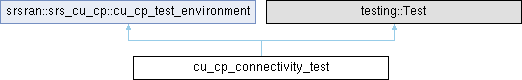

Inheritance diagram for cu_cp_connectivity_test:

Additional Inherited Members | |
 Public Member Functions inherited from srsran::srs_cu_cp::cu_cp_test_environment Public Member Functions inherited from srsran::srs_cu_cp::cu_cp_test_environment | |
| cu_cp_test_environment (cu_cp_test_env_params params={}) | |
| cu_cp & | get_cu_cp () |
| mock_amf & | get_amf () |
| mock_du & | get_du (size_t du_index) |
| mock_cu_up & | get_cu_up (size_t cu_up_index) |
| void | run_ng_setup () |
| Start CU-CP connection to AMF and run NG setup procedure to completion. | |
| optional< unsigned > | connect_new_du () |
| Establish a TNL connection between a DU and the CU-CP. | |
| bool | drop_du_connection (unsigned du_idx) |
| Drop TNL connection between a DU and the CU-CP. | |
| bool | run_f1_setup (unsigned du_idx) |
| Run F1 setup procedure to completion. | |
| optional< unsigned > | connect_new_cu_up () |
| Establish a TNL connection between a CU-UP and the CU-CP. | |
| bool | drop_cu_up_connection (unsigned cu_up_idx) |
| Drop TNL connection between a CU-UP and the CU-CP. | |
| bool | run_e1_setup (unsigned cu_up_idx) |
| Run E1 setup procedure to completion. | |
| bool | connect_new_ue (unsigned du_idx, gnb_du_ue_f1ap_id_t du_ue_id, rnti_t crnti) |
| Connect a new UE to CU-CP through a provided DU. | |
| void | tick () |
| Tick the CU-CP clock. | |
| bool | tick_until (std::chrono::milliseconds timeout, const std::function< bool()> &stop_condition) |
| Keep ticking the CU-CP clock until the condition provided returns true. | |
| bool | wait_for_ngap_tx_pdu (ngap_message &ngap_pdu, std::chrono::milliseconds timeout=std::chrono::milliseconds{1000}) |
| Tick CU-CP timer until a NGAP PDU is sent. | |
| bool | wait_for_e1ap_tx_pdu (unsigned cu_up_idx, e1ap_message &e1ap_pdu, std::chrono::milliseconds timeout=std::chrono::milliseconds{1000}) |
| bool | wait_for_f1ap_tx_pdu (unsigned du_idx, f1ap_message &f1ap_pdu, std::chrono::milliseconds timeout=std::chrono::milliseconds{1000}) |
| const cu_cp_test_env_params & | get_test_env_params () const |
| Public Attributes inherited from srsran::srs_cu_cp::cu_cp_test_environment | |
| srslog::basic_logger & | test_logger = srslog::fetch_basic_logger("TEST") |
| srslog::basic_logger & | cu_cp_logger = srslog::fetch_basic_logger("CU-CP") |
The documentation for this class was generated from the following file:
- tests/unittests/cu_cp/cu_cp_connectivity_test.cpp